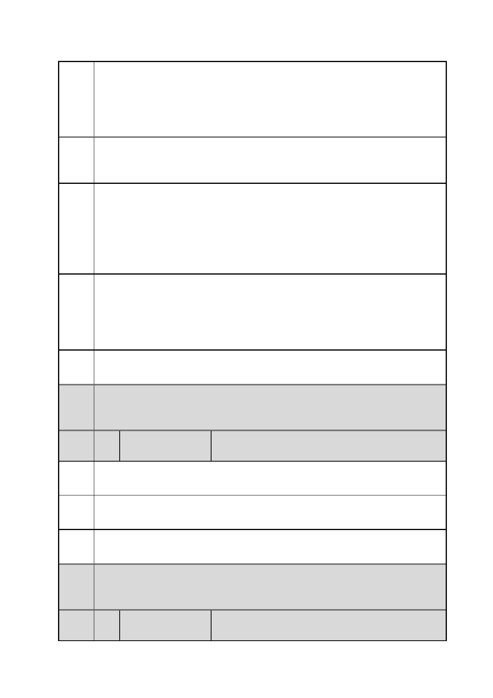

臺北市都市計畫委員會 公民或團體陳情意見綜理表
「變更臺北市信義區逸仙段二小段 33 地號等 21 筆土地（原臺北機廠）
案
名
工業區為創意文化專用區、特定專用區、道路及綠地用地主要計畫案」
及「擬定臺北市信義區逸仙段二小段 33 地號等 21 筆土地（原臺北機
廠）創意文化專用區、特定專用區、道路及綠地用地細部計畫暨劃定
都市更新地區計畫案」
建議 需要系統性及尊重原使用脈絡地完整保存有形的相關機具、文物、文
辦法 獻檔案，以及無形的技術、操作方法等才足夠。
二
陳情
理由
三
臺北市的各項工業史蹟即將消失殆盡，華山及松菸殷鑑不遠，市府宜
儘速保留所剩無幾的工業遺產。「臺北宣言」強調新用途不能犧牲工
業遺產的普世與核心價值。而改為美術館就是犧牲了工業遺產的核心
價值。臺北市做為百餘年來臺灣的首府，更有責任替全臺灣的現代化
歷程留下記錄，而從臺北開始的鐵道系統與文化是這個過程最好的代
表與見證。
建議
辦法
三
處理臺北機廠最佳的作法是做為交通科技博物館，以典藏與展示相關
文物、機具、歷史與技術為主，輔以相關的商業與文創活動，創造新
的經濟與文化價值；兩者相輔相成，但主從分明。故應編列典藏與展
示相關文物、機具、歷史與技術的蒐藏研究文化資產計畫，除行政與
研究空問外，也需規劃充足的大型典藏與展示空間於原使用位置。
市府 同編號 1 市府回應內容。
回應
委員
會議 內容同編號 1。
決議
編
號
8 陳情人
楊○勳
陳情 臺北機廠具有眾多臺灣鐵道文史內涵及物件，應保存發揮其價值。
理由
建議 全區保留。以作為臺灣鐵道博物館，並反對他種形式之開發。
辦法
市府 同編號 1 市府回應內容。
回應
委員
會議 內容同編號 1。
決議
編
號
9 陳情人
鄧先生（單一申訴窗口 1999 市民熱線）
第 20 頁/共 154 頁